レコード・クリーナー
レコードの盤面清掃用。トーンアーム状の自動タイプ、オーソドクッスなベルベットタイプ、粘着式がある。
AT-6001
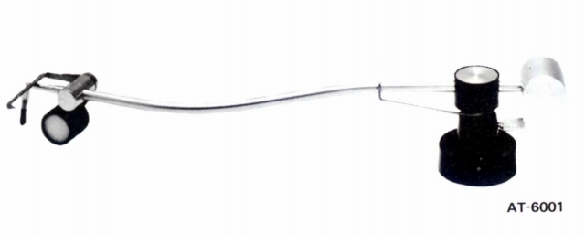
■価格 1,300円
■備考 ナイロンブラシとベルベットローラで清掃。
ブラシとローラは交換可（交換用ローラー・ブラシセット
AT-601 150円)
後に「AT6001」と改称。
価格は1978年のもの。
1981年には1,600円
AT-6004J
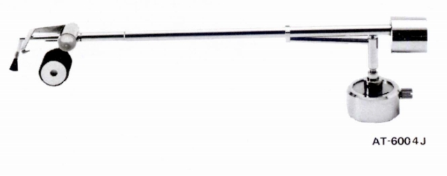
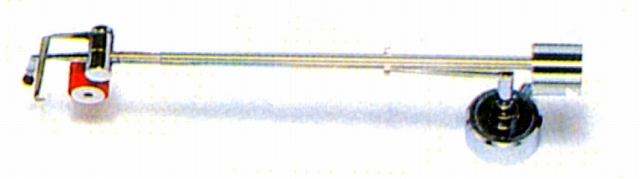
■価格 2,400円
■備考 特殊導電材ブラシと西ドイツ製ベルベットローラで清掃。
プレーヤー・ケースのサイズに合わせ、長さの調整が可能。
ブラシとローラは交換可（交換用ローラー・ブラシセット
AT-602 200円)
後に「AT6004J」と改称。
AT-6012
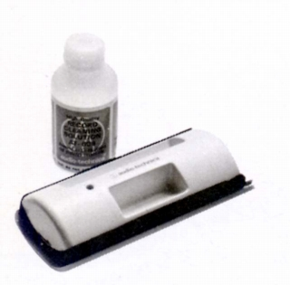
■価格 1,600円
■備考 毛足の方向や寸法などに工夫したベルベットクリーナー。
付属のクリーナー液を注入すると湿式クリーナーになる
クリーナー液 AT-608
300円(後にAT634 400円に変更）
後に「AT6012」と改称。
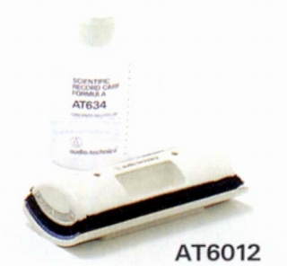
AT-6010
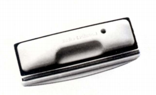
■価格 900円
■備考 毛足の方向や寸法などに工夫したベルベットクリーナー。
付属のクリーナー液を注入すると湿式クリーナーになる
クリーナー液 AT-608
300円
後に「AT6010」と改称。
PDQ�U
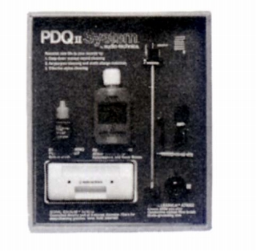
■価格 3,800円
■備考 スタイラス・クリーナーAT-607とレコード・クリーナーAT-6012、
静電アース付き自動ディスククリーナAT-6002をセットにしたもの。
AT6015
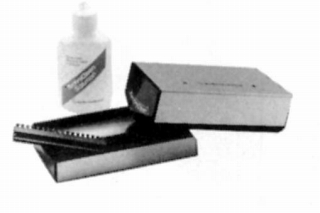
■価格 2,800円
■備考 静電気を逃す導電性ボディのベルベットクリーナー。
クリーナー液 AT-618
500円
AT6017
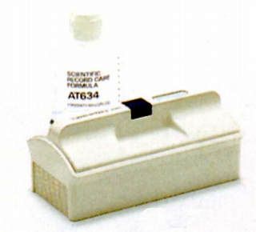
■価格 2,000円
■備考 新素材SPFで適度な湿度を保持する湿式専用クリーナー。
クリーナー液 AT-634
400円
ホワイトモデルの他に、グリーン、バイオレット、ピンクモデルあり。
AT6018
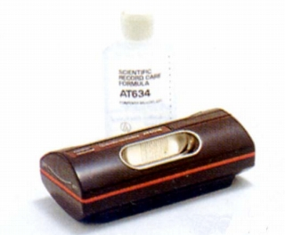
■価格 3,300円
■備考 ワンアクションで加湿・除電・ふき取りができるクリ−ナー。
クリーナー液 AT-634
\400
AT6014
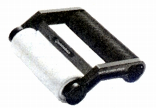
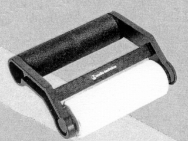
■価格 2,500円
■備考 粘着式ダストクリーナー。
ローラーは水洗い可。販売期間は短かったようだ。
AT6012X
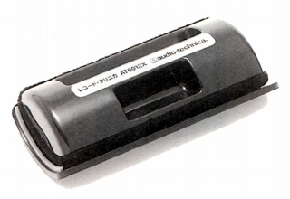
■価格 1,200円
■備考 AT6012ベースの乾式専用クリーナー。